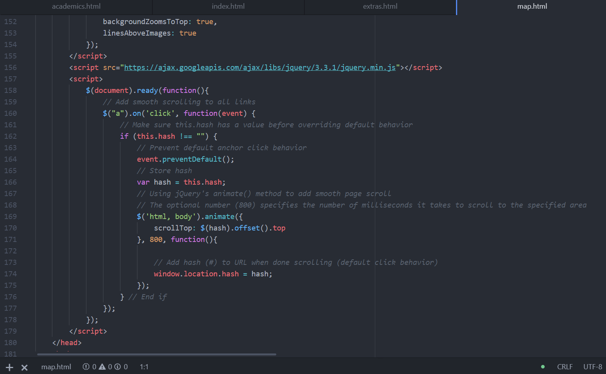

This Website
I originally built this website from scratch in July 2018. I later did a complete overhaul of the structure and design in August 2019.
I learned HTML and CSS using w3schools.com, a fantastic resource that I recommend for anyone. My lack of a professionally taught course in web design
meant the project was almost entirely trial and error. This second interation has a more refined, intuitive design and a structure
that functions well for all devices.

This website is hosted by GitHub and the interactive map is courtest of amCharts.